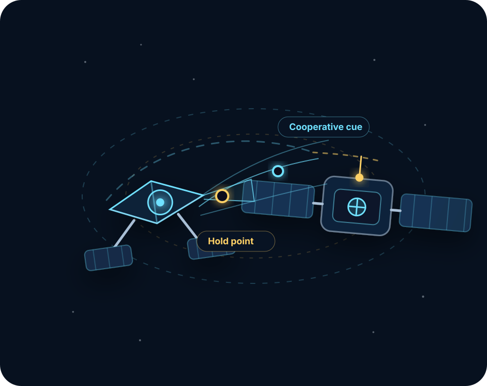

Readiness-package verification
Confirm that cooperative cues, interface geometry, markings, and readiness features are observable and usable by a future servicer.
Servicer-side architecture · Cooperative spacecraft · RPO-ready operations
Antandros is developing a servicer-side spacecraft architecture for advanced non-contact inspection and servicing-readiness verification of cooperative client spacecraft, before any contact-capable mission phase.

Antandros is developing the servicer-side functions for cooperative target recognition, relative navigation, approach-to-hold-point operations, and servicing-readiness verification.
The first mission profile is intentionally lower risk: inspect, characterize, verify readiness, and retreat. Contact-capable services are treated as later roadmap phases, not current operations.
Initial service focus
An initial service designed to deliver practical decision support without immediate physical interaction with the client spacecraft.
Confirm that cooperative cues, interface geometry, markings, and readiness features are observable and usable by a future servicer.
Capture external visual evidence for deployment, alignment, damage, contamination, or degradation review.
Collect imagery and inspection data that can support customer review of micrometeoroid and orbital-debris events.
Provide inspection support for hotspot review and other apparent external thermal issues, with sensor-dependent confidence.
Gather targeted views of structures, deployables, surfaces, and externally visible features after commissioning or anomaly events.
Help teams compare on-orbit external configuration against expected deployment or operational states.
Inspect surfaces for apparent discoloration, erosion, contamination, or other external changes over mission life.
Provide visual and contextual data that may support customer-led engineering assessment of charging-related effects.
Inspection outputs are assessment-support data. Higher-confidence diagnostics may require specialized sensors, customer engineering review, or payload-specific development.
Servicer-side stack
Detect cooperative target features and classify the client’s readiness-package state.
Estimate relative pose and approach corridor feasibility using standards-aware target assumptions.
Execute approach-to-hold-point logic with safe retreat criteria and conservative keep-out assumptions.
Collect visible, geometric, and sensor-driven data products needed for readiness verification.
Trace inspection observations to requirements, assumptions, risks, and staged servicing readiness.
Mature toward ground-demonstrated contact, manipulation, and prepared-spacecraft servicing pathways.
A durable commercial servicing market needs repeatable interfaces, inspectable client features, reusable CONOPS, and objective evidence that a servicer can safely approach cooperative spacecraft.
Antandros’ thesis is that stronger standardization and interoperability between client and servicer spacecraft can reduce mission friction and long-run servicing cost.
See the standards postureStaged roadmap
Phase I foundation
Requirements, concept of operations, feasibility analysis, risk register, preliminary economics, V&V framework, and flight-demonstration roadmap.
Phase II maturation
Simulation, hardware-in-the-loop planning, contact/manipulation maturation, and staged test artifacts for a credible orbital demonstration.
Five-year objective
Demonstrate safe approach, characterization, inspection, readiness verification, hold points, and retreat before physical interaction.
For spacecraft teams, partners, and program collaborators
Talk with Antandros about cooperative readiness packages, standards traceability, inspection concepts, and staged servicing-roadmap planning.